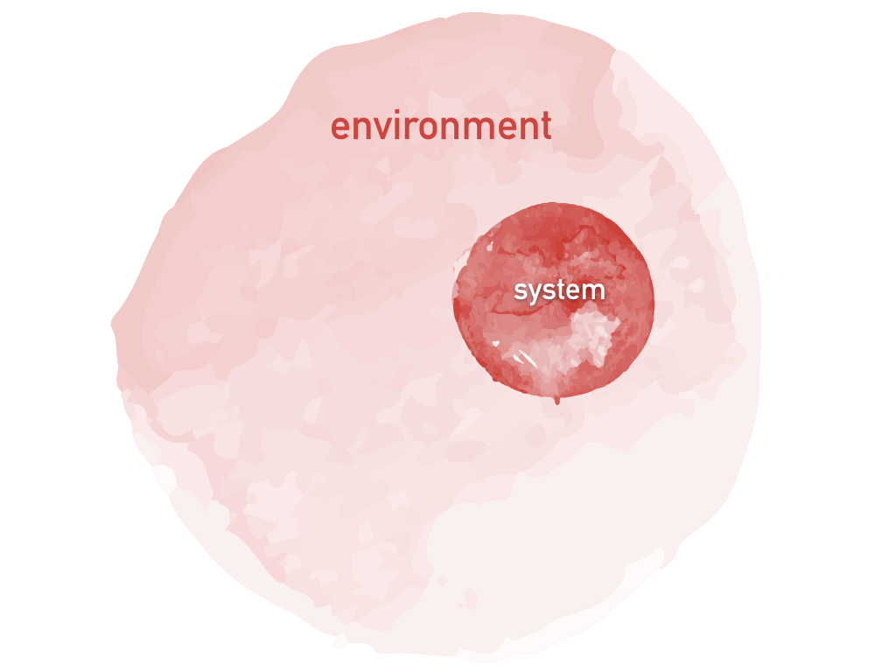

This set of notebooks contains the material for a comprehensive 54-hour course on open quantum systems (OQS), starting from basic concepts and covering the most essential concepts in the literature of OQS. Moreover, we present a novel idea: to teach how to simulate many paradigmatic examples of OQS dynamics with Qiskit and the IBM Q Experience processors. This idea finds its origin in a recent publication (arXiv:1906.07099, currently in press at NPJ Quantum Information), in which we demonstrate that the IBM Q Experience is a versatile and robust platform for simulating open quantum systems.
The course is aimed at master students with a background in Quantum Mechanics and Quantum Information theory who are also familiar with Qiskit. It is divided into lectures and projects. Through the lecture notes, the lecturer will find several examples of important concepts for OQS in terms of circuits, with which we assume the student to be acquainted, as well as interactive plots illustrating OQS dynamics. The lecture material also includes many circuits that enable the simulation of OQS dynamics on the real IBM Q devices, with comprehensive explanations on their working principles. Finally, the lectures are to be supplemented with guided practical "hands-on" sessions (found in the Projects section) in which the students must implement the corresponding circuits and analyze the results.

Table of contents
Lectures
- Introduction
- Preliminaries
- Microscopic derivation of the master equation
- Dynamical maps: Markovian semigroups
- Dynamical maps: divisibility
- Projection operator techniques
- Jaynes-Cummings model with losses
- Non-Markovian quantum dynamics